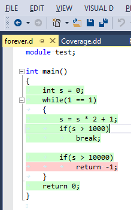
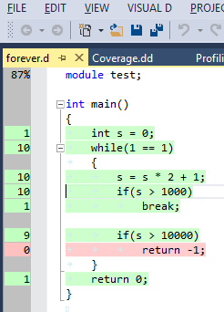

Code Coverage
DMD comes with an option to instrument an executable for coverage analysis during its execution. You can enable it on the project configuration page "Code Generation".

With code coverage enabled the executable will record the source code lines that have been executed and will mark the lines that have code generated but are never executed. This information is written into files named as the source files but with extension ".lst".
|
If you enable option "Colorize Coverage" in the Visual D colorizer settings (reachable through the "Open Language Options..." entry in the Visual D menu), these lines will be highlighted in the editor. The highlighting will not show up unless the lst-file is newer than the source file as it will probably be out of sync otherwise. |

|
If you start editing the source file Visual D will try to keep coverage information in sync. If you want to get rid of the coverage coloring, just resave the source file. Visual D will assume the coverage is invalid then and stop displaying it.
|
Enabling "Show coverage margin" on the same options page will add a column to the editor window that displays the exact coverage counters for each line. The very first line contains the percentage of covered source lines with generated code in the module. [Visual Studio 2008 displays the coverage margin as an overlay on the right side of the editor window.] |

|